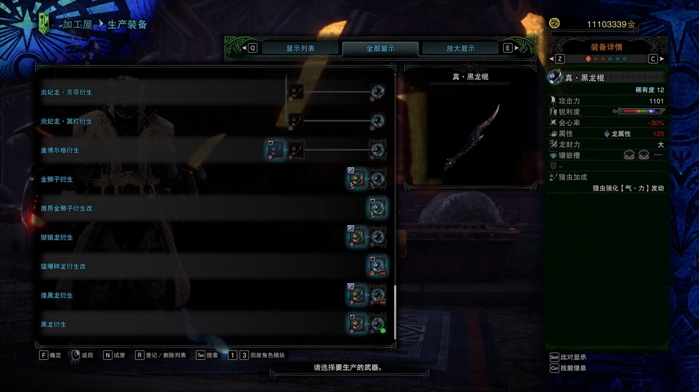
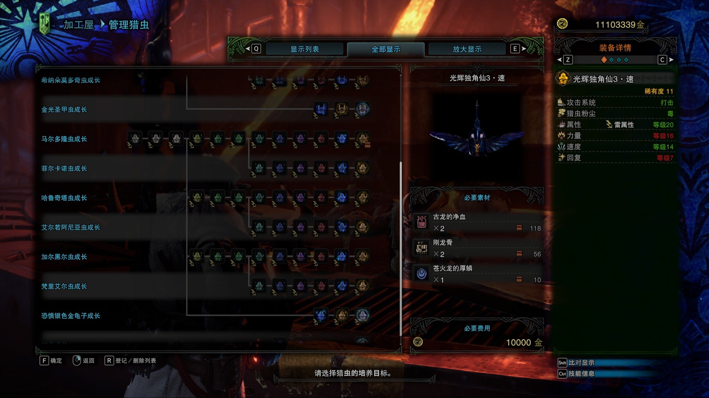
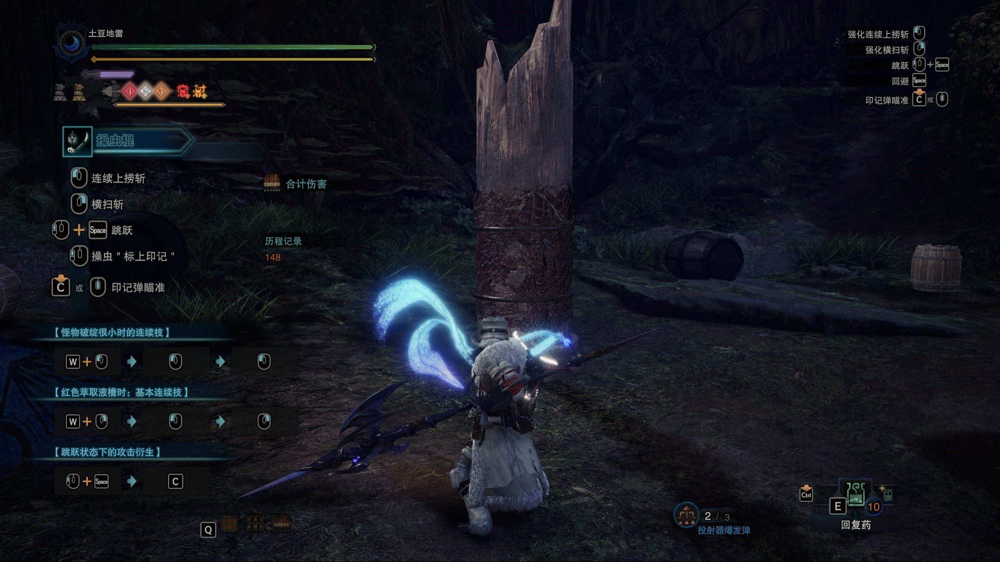

操 虫 棍 之 「棍」
基本属性
右图为操虫棍的生产界面，操虫棍和其它武器一样，都拥有攻击力、锐利度、会心率、属性、龙封力、镶嵌槽及防御力这几个词条，这些对操虫棍的影响同其它武器，这里不多赘述。
操虫棍属于斩击系武器，攻击怪物尾部可积累切断值。
特殊属性
可以看到操虫棍拥有一个叫猎虫加成的属性，这可以为猎虫带来加成，同时操虫棍也可以通过消耗投射器弹药暂时强化猎虫。

操 虫 棍 之 「虫」
攻击系统
右图为猎虫培养界面，可以看到猎虫信息第一条的攻击系统，此系统与武器的攻击系统一致。
·打击：攻击怪物头部可积累昏厥值。
·切断：攻击怪物尾部可积累断尾值。
猎虫粉尘
猎虫通过印记弹主动攻击怪物后会在原地留下粉尘，攻击粉尘会引发粉尘爆炸并触发相应效果。
·回复：引爆后为范围内的队友回复体力值。
·麻痹：引爆后范围内的怪物会积累麻痹值。
·爆破：引爆后范围内的怪物会积累爆破值。
·毒：引爆后范围内的怪物会积累中毒值。
属性等级
猎虫一共有四个属性，影响猎虫的不同能力，等级最低为1级，最高为20级，等级固定，不能提升，但可以修改属性种类。
·属性：效果同武器的属性，与怪物之间形成克制关系。
·力量：影响猎虫的伤害。
·速度：影响猎虫的飞行速度。
·回复：影响猎虫的耐力回复速度。

猎 虫 精 华
精华概念
当猎虫击中怪物不同部位后，会萃取对应的精华，猎人召回猎虫后，便会获取对应的精华加成，持续一段时间。由于获取精华后左上角的对应菱形精华槽会亮起，因此也称为“点灯”。
猎虫只能同时储存一个精华，在左上角三个精华槽左边的虫形标志会亮起对应的颜色表示当前储存的精华，重复萃取会覆盖，召回后消失。猎虫强化期间，猎虫能储存两个精华，注意此处是“个”，即可能会储存两个同种精华，造成浪费。重复获取精华也只会刷新持续时间，而不会叠加效果。
精华种类
·红色精华：提升攻击力，强化原有招式，并且解放新的招式。基础持续时间90秒。
·白色精华：提升移动速度与跳跃高度。基础持续时间120秒。
·橙色精华：提升防御力与耐冲能力。基础持续时间150秒。
·绿色精华：不占用精华槽，为猎人回复一定体力值。
精华组合及外部增益
同时存在两种精华加成时，提供1.1倍攻击加成，且不同的精华组合会有不同的额外增益。
同时存在三种精华加成时，提供1.15倍攻击加成，获得等同于耐冲等级的耳塞、耐震和风压无效，最多三级。同时所有的精华持续时间变为90秒，结束之前无法重置时间。
强化持续、猎虫强化【气】等效果均可延长精华加成时间。
